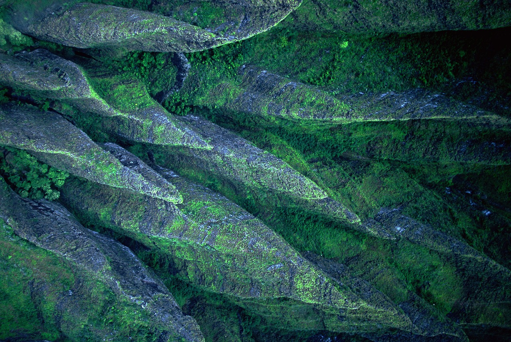
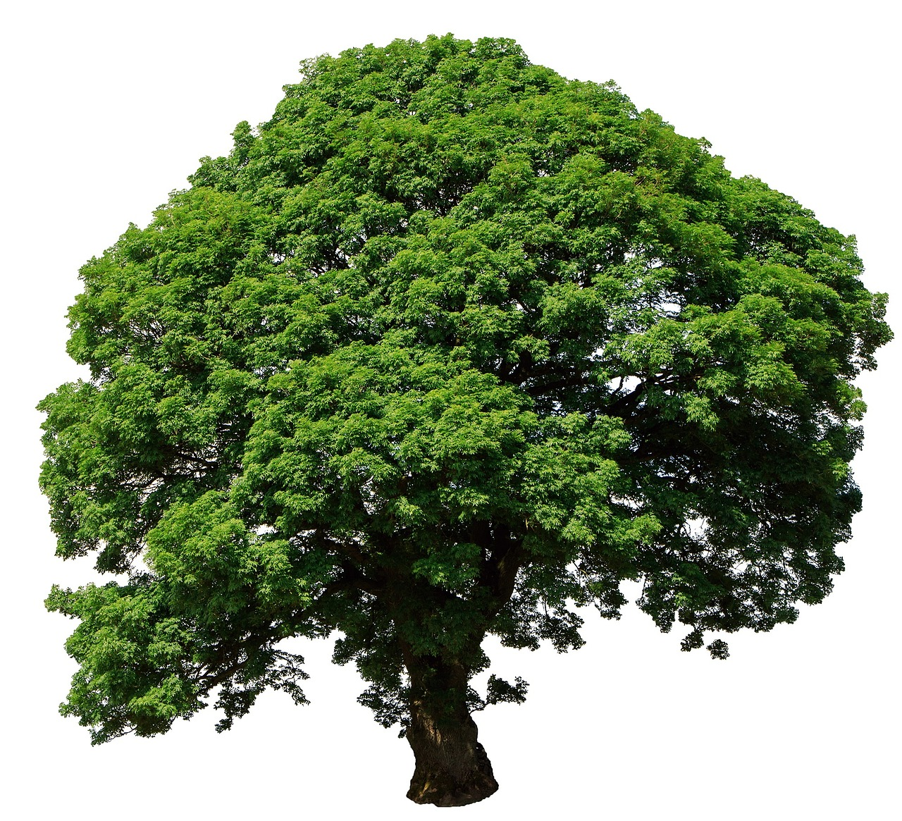

01
RESOURCE CIRCULATION
자원순환
지속가능한 자원 이용 체계 구축
자연과 인간을 위한
건강하고 행복한
환경조성
환경의 가치를 회복하고
지속가능한 미래를 만들어갑니다.
지속가능한 자원 이용 체계 구축
깨끗한 공기를 위한 환경관리
건강한 물환경과 생태 보전
탄소중립을 향한 환경전환
다시 살아나는 생태 공간
0%


GREEN RECOVERY
0%
환경을 바꾸는 일은
삶의 공간을 바꾸는 일입니다.
한국환경공단은 환경의 가치를 회복하고
지속가능한 미래를 만들어갑니다.
MAJOR ENVIRONMENTAL PROJECTS
폐기물을 자원으로 순환시키는 체계를 구축합니다.
환경기초시설을 계획하고 운영을 지원합니다.
탄소중립과 대기질 개선을 위해 노력합니다.
건강한 물순환 체계를 만들어갑니다.
화학물질과 환경 위해로부터 국민을 보호합니다.
훼손된 공간을 다시 살아나게 합니다.
ENVIRONMENTAL DATA
※ 아래 수치는 실제 통계가 아닌 컨셉 시안용 예시 데이터입니다.
88.5%
자원 순환 재활용률 (시안 데이터)
1,240개소
환경기초시설 통합 관리
42.3%
탄소중립 목표 감축률
15,800ha
누적 생태공간 복원 면적